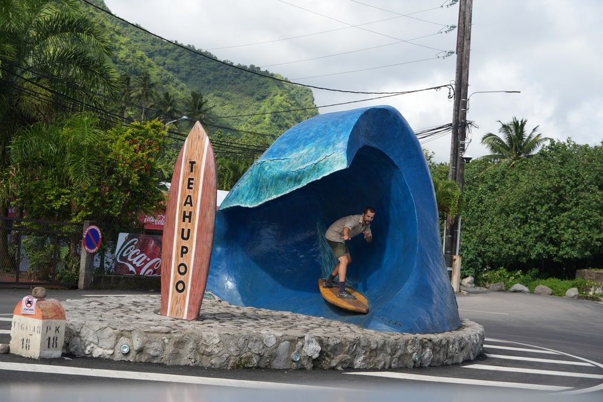
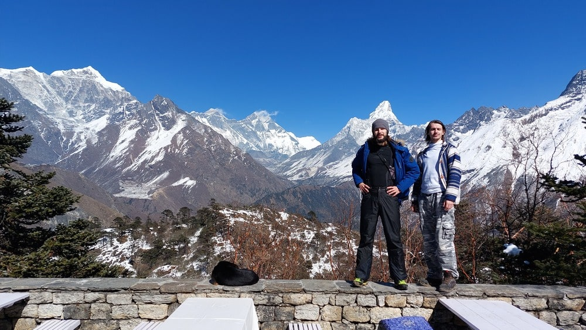

Page release
Hey, my name is Jakub, and I'm glad you're here!
I'm a travel enthusiast and a young guy from Kraków. My journey into exploring the world started in the summer of 2021 with my first serious trip — a bike ride from Kraków to the Baltic Sea. I was still a teenager back then, but my passion for discovering new places was already strong. Since then, I've built a travel portfolio that I can be quite proud of.
Quick facts:
- Age - 23
- A place I hold close to my heart - Polynesia
- Favorite travel destinations - Tropical islands
- Sea or mountains? - Sea
- Favorite mode of transport - Bicycle
 Me in Polynesia, Sep 2024
Traveling is my whole life, and I dedicate every spare moment to pursuing this passion.
Being a programmer by profession gave me the idea to create my own personal travel site. I built it as a way to have a nicely organized summary of my travels, a map with pins, a list of countries I've visited, and more.
The project was going so well that I decided to add a blog as well - and that's how what you're looking at was born.
Since I'm always on the lookout for inspiration and like-minded people who approach traveling the same way I do, I figured I`d also share my own trips.
If even one person stumbles upon this site and leaves feeling inspired to explore new horizons, my mission is accomplished.
What you`ll find here:
- Maps with pins and a list of countries I`ve visited
- Travel reports from my adventures
- A blog with various travel-related topics (gear reviews, thoughts, etc.)
- Galleries of my best travel photos
- Links to YouTube videos from my trips (they`re in Polish tho 😬)
- Easter eggs and fun facts on each photo page about the picture`s story
So what`s next? In the coming weeks, I`ll be adding content from my past trips - writing all the posts and reports will take some time. Meanwhile, I`ll also share updates on current projects. In the future, my best friend (who started this whole journey with me) and I plan to expand our travel-related activities... but that`s a story for another time.
 With my friend (Mateusz) in Nepal, Feb 2022
I`m incredibly grateful that you took the time to read this. I hope you enjoy my site and maybe even find a little inspiration here.
Peace,
Jakub